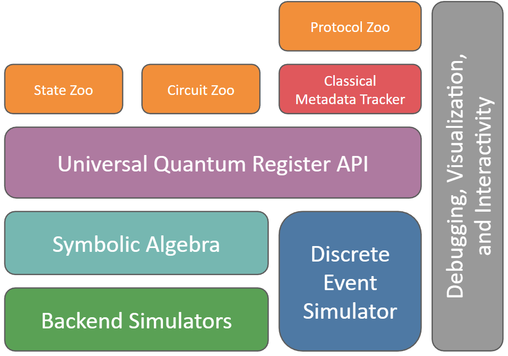

QuantumSavory.jl
A multi-formalism simulator for noisy quantum communication and computation hardware, with support for symbolic algebra, multiple simulation backends, noise models, discrete-event simulation, optimization, and visualization.

The architecture centers on a single register interface that connects symbolic modeling, numerical backends, protocol control, and reusable building blocks. The main productivity gain is simple: you describe the physics once in a symbolic language, then reuse that model across different simulation backends instead of rewriting it for each formalism. That makes it much easier to build digital twins and compare modeling assumptions without starting over. If you want the full mental model behind that separation of concerns, start with Architecture and Mental Model.
Start Here
If this is your first visit, the shortest path is:
- Install the package with
pkg> add QuantumSavory. - Work through the Getting Started Manual.
- Continue into Explanations, Tutorials, How-To Guides, or References, depending on what you need next.
Documentation Map
- Getting Started Manual: a first guided simulation.
- Explanations: architecture, conventions, and the conceptual model.
- Tutorials: focused lessons on one feature at a time.
- How-To Guides: larger task-oriented workflows.
- References: API lookup and generated module documentation.
Capabilities
QuantumSavory is particularly useful when you need to study a system across multiple abstraction layers at once: hardware noise, heterogeneous physical subsystems, algorithmic structure, and distributed classical control. This is the situation where many models become slow to build and hard to change. The main value of QuantumSavory is that it reduces that friction.
- symbolic descriptions of states, operations, and observables: you describe the intended physics once, in backend-agnostic language, instead of hand-writing tableaux, wavefunctions, phase-space objects, or other backend-specific mathematics; this lets you work productively even when the right backend uses math you would not want to write by hand
- interchangeable numerical backends: the same model can be executed with fast specialized methods when they apply, and the library is not limited to ideal qubit-only models; it can support quantum modes, multi-level systems, continuous-variable models, and other physically realistic subsystems; this makes it practical to compare accuracy, speed, and physical realism without rebuilding the simulation
- declarative noise models and automatic time handling: you specify what noise processes exist and when protocol events happen, while QuantumSavory handles the bookkeeping of evolving those effects in the chosen representation instead of making you manually derive the backend-specific form of each noise process; this keeps physical detail from turning into repetitive simulator-specific glue code
- classical control for LOCC-style protocols through a structured metadata API: protocols coordinate by publishing and querying semantic facts about resources and messages, which makes them compose in a lego-like way without bespoke manual piping of classical message channels; this makes larger protocol stacks easier to extend and reuse
- visualization of states, metadata, and protocol state: the same abstractions used for simulation can also be inspected and debugged visually while developing larger models
Example Applications
Below we show some of the results of the How-To guides.
A simulation of a quantum repeater:
A simulation of the generation of a cluster state in color-center memories:
For a first runnable example, start with the Getting Started Manual.
Office Hours
Office hours are held every Friday from 12:30 – 1:30 PM Eastern Time via Zoom. Before joining, make sure to check the Julia community events calendar to confirm whether office hours are happening, rescheduled, or canceled for the week. Feel free to bring any questions or suggestions!
Support
QuantumSavory.jl is developed by many volunteers, managed at Prof. Krastanov's lab at University of Massachusetts Amherst.
The development effort is supported by The NSF Engineering and Research Center for Quantum Networks, and by NSF Grant 2346089 "Research Infrastructure: CIRC: New: Full-stack Codesign Tools for Quantum Hardware".